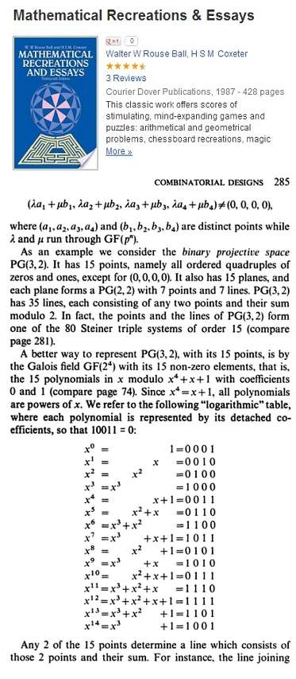
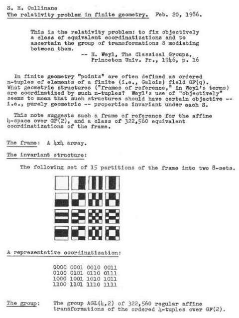
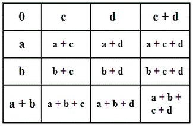
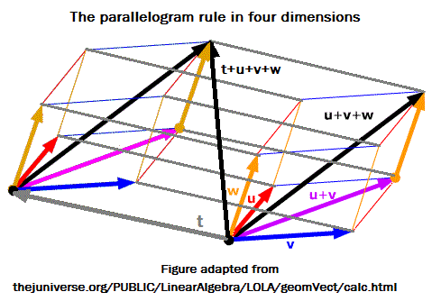

Vector Addition in a Finite Field
by Steven H. Cullinane on
January
5, 2013
The finite (i.e., Galois) field GF(16),
according to J. J. Seidel in 1974—

The same field according to Steven H. Cullinane in 1986,
in its guise as the affine 4-space over GF(2)—

The same field, again disguised as an affine 4-space,
according to John H. Conway and N.J.A. Sloane in
Sphere
Packings,
Lattices, and Groups , first published in
1988—

The above figure by Conway and Sloane summarizes, using
a 4×4 array, the additive vector-space structure of the finite
field GF(16).
This structure embodies what in Euclidean space is called
the parallelogram rule for vector addition—

(Thanks to
June Lester for the 3D
(uvw)
part of
the above figure.)
For the transition from this colored Euclidean hypercube
(used above to illustrate the parallelogram rule) to the
4×4 Galois
space (illustrated
by Cullinane in 1979 and
Conway and Sloane in 1988— or later... I do not have
their book's first edition), see Diamond
Theory in 1937,
Vertex Adjacency in a Tesseract and in a 4×4 Array,
Spaces
as Hypercubes,
and The
Galois Tesseract.
|